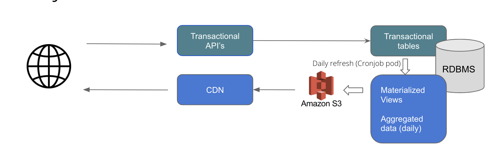

Crowdsourcing Platform
Table of Contents
- Crowdsourcing Platform
- Table of Contents
- About The Project
- Architecture
- Languages and Tools
- Dashboard Design
- CI/CD
- Infrastructure as Code
- Getting Started
- Usage
- Running services
- Database migrations
- Testing
- Security
- Running cost estimates
- Architecture Decision Records
- Contributing
- License
- Contact
About The Project
This is a web application which can be used to crowdsource audio and validate them for various languages. The application makes use of NodeJs, Postgres for Database. It can be hosted on any cloud platform. The current application has code to support AWS and GCP as providers to store the recorded information. Crowdsourcing Platform’s developer documentation is meant for its adopters, developers and contributors.
The developer documentation helps you to get familiar with the bare necessities, giving you a quick and clean approach to get you up and running. If you are looking for ways to customize the workflow, or just breaking things down to build them back up, head to the reference section to dig into the mechanics of Crowdsourcing Platform.
Data Collection Pipeline is based on an open platform, you are free to use any programming language to extend or customize it but we prefer to use python to perform smart scraping.
The Developer documentation provides you with a complete set of guidelines which you need to:
- Install dependencies for the Crowdsourcing Platform
- Configure Crowdsourcing Platform
- Customize Crowdsourcing Platform
- Extend Crowdsourcing Platform
- Contribute to Crowdsourcing Platform
Built With
We have used Node.js to build this platform. * Node
Architecture

Languages and Tools

Dashboard Design

- The transactional tables and view tables are kept separate.
- Materialized views are used which holds the data as well. This avoids on the fly computations for aggregation for each query.
- The materizaled view are refreshed every 4 hours
- As a part of the refresh job, the aggregated data is dumped as json that is be served directly via CDN.
Advantages:
- Faster reads: Separate view with only 365 aggregated data points per year.
- Less overhead on DB as data queried is on a very small data set and served from S3 buckets
- Transactional tables are optimized for faster writes as we have separate views for reads
- Simplified read queries as complexity is abstracted in views
- AWS RDS managed DB. Can be scaled horizontally and vertically easily if required in future.
CI/CD
- CircleCI is used for CI/CD.
- Unit tests are run continously for each commit
- Functional Tests are run continously for each commit and act as one if the quality gates before Production deployment
- Automated deployment to K8s for multiple environments
- Database schema changes are done continously and automatically
- Trunk based developement is followed

Infrastructure as Code
- Infrastructure defined in code with Terraform and shell scripts
- Easily migrate to another AWS account
- Spin up new env easily

Getting Started
To get started install the prerequisites and clone the repo to machine on which you wish to run the application.
Prerequisites
-
Install
nodelibrary using commands mentioned below.-
For any linux based operating system (preferred Ubuntu):
sudo apt-get install nodejs -
For Mac-os:
brew install node -
Windows user can follow installation steps on https://nodejs.org/en/#home-downloadhead
-
-
Install or connect to a postgres database
-
Get credentials from google developer console for google cloud storage access/ or aws cli for amazon s3 storage access.
Installation
-
Clone the repo using
git clone https://github.com/Open-Speech-EkStep/crowdsource-dataplatform.git -
Go inside the directory
cd crowdsource-dataplatform -
Install node requirements
npm install
Usage
Common configuration steps:
Setting credentials for Google cloud bucket
You can set credentials for Google cloud bucket by running the following command
gcloud auth application-default login
Setting credentials for AWS cloud bucket
You can set credentials for AWS cloud bucket by running the following command
aws configure
Bucket configuration
You can create a specific bucket to store the recorded samples on aws or gcp. And mention those in the environment variables.
Environment file configurations
The following are the variables required to run the application, for running on local these can be added to a .env file
DB_HOST: The host url where your postgres instance is running
DB_USER: The username to access the db
DB_NAME: The database name
DEV_DB_NAME: The database name specific to dev environment
DB_PASS: The database password
BUCKET_NAME: The bucket name configured on aws or gcp
ENCRYPTION_KEY: Key to run unit tests
PORT: Port to run the application on
Running services
Make sure the google credentials are present in project root folder in credentials.json file.
You can run the project using the command
npm run
To run application using a Google cloud bucket
npm run gcp
To run application using a AWS cloud bucket
npm run aws
Database migrations
This package is used to do migrations.
To create the current database structure in your postgres instance, run the following command:
db-migrate up
It would read the configurations from the path
migations/config/migration_config.json
Once can also run the migrate up command by setting an environment variable
DATABASE_URL=postgresql://${DB_USER}:${DB_PASS}@${DB_HOST}/${DB_NAME}
To add a new migration
db-migrate create add-new-table
Using the above command with the --sqlFile flag would create corresponding .sql files in which one can write sql commands to do the operation.
To rollback the last migration, one can
db-migrate down
Documentation for the package can be found here
Testing
Multiple types of tests are continously performed to make sure the application is in healthy state. Pyramid approach is followed with Unit tests at the base and Exploratory tests on top.

Unit Tests
Unit tests can be run using below command
npm test
Functional Test
Functional tests can be run using below command
npm run functional_test -- --env (test|dev)
Scalabiity Test
Scalabiity tests performed to verify that the system is elastically scalable Below tests were performed
Test Objective: Scalability Test - Validate elastic scalability
Resource Configuration:
Environment: Dev
Pod resources: 0.25 CPU/ 250M RAM
Horizontal Pod Autoscaler :
Scaling Threshold - 10% CPU Utilization
Min pods: 1
Max Pods: 10
Test configuration:
Number of concurrent users: 1000
Total Requests : 15000
Expected: Pods should scale if load increases and CPU utilization goes beyond 10% and should scale down after 5 mins
Actual : Pods were scaled up after the CPU utilization went past 10%. Time to scale to desired state was around 2-3 mins
Outcome:
PASSED
As surge started, pods started spinning up


Load Test
Load testing is performed to verify the system is able to handle 5K concurrent users without much impact on latency
Test Objective: Load Test - Validate if application can handle 5K concurrent users
Resource Configuration:
Environment: Test
Initial Pods: 3
Pod resources: 2 CPU/ 2GB RAM
Horizontal Pod Autoscaler :
Scaling Threshold - 40% CPU Utilization
Min pods: 3 , Max Pods: 10
Test configuration:
Number of concurrent users: 20000
Requests per user : 3
Ramp up time: 10 sec
Iterations: 3
Outcome:
PASSED
ELB stats:

Database stats:

Summary:
- This test had 20000 users ramped up within 1 min (3 times).
- The test was performed from a single machine so 20K concurrent users could scale in 1 min.
- All the requests were served within initial resources, no scaling was triggered.
- All three endpoints served response in around 2 sec on an average.
- The system was able to handle upto 12K concurrent users.
- There were some errors thrown by AWS Load balancer may be due to single IP requests.
- Database could handle the load and no connection leak is observed
Security
Security first approach is taken while building this application. The OWASP top 10 are ingrained in the application security DNA. Please reach out to srajat@thoughtworks or heerabal@thoughtworks.com for more information around Security
Running cost estimates
Amazon RDS (4 CPU): $400
WAF: $30
EKS + Fargate: $75 + $225 = $300
ELB: $150
Others: $200
Total: ~ $1100-1200 per month
Architecture Decision Records
Decicion records are maintained HERE
Contributing
Contributions are what make the open source community such an amazing place to be learn, inspire, and create. Any contributions you make are greatly appreciated.
- Fork the Project
- Create your Feature Branch (
git checkout -b feature/AmazingFeature) - Commit your Changes (
git commit -m 'Add some AmazingFeature') - Push to the Branch (
git push origin feature/AmazingFeature) - Open a Pull Request
License
Distributed under the [MIT] License. See LICENSE for more information.
Contact
Project Link: https://github.com/Open-Speech-EkStep/crowdsource-dataplatform/